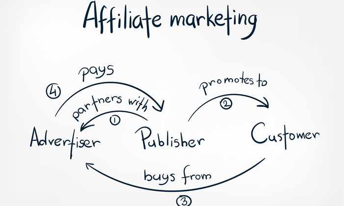
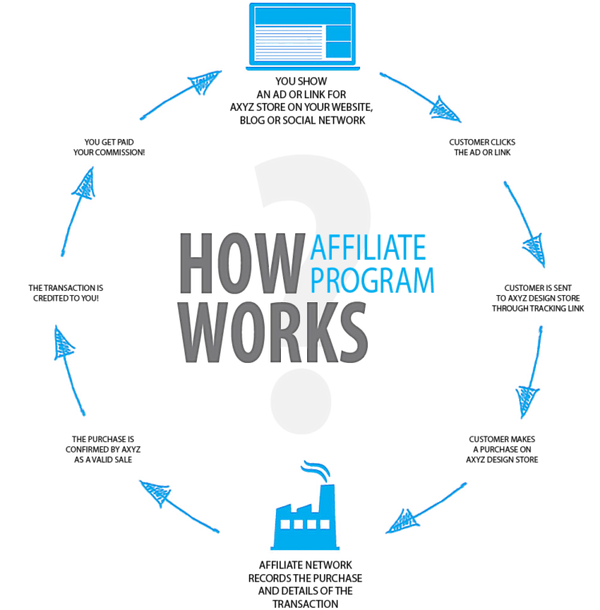

What is Affiliate Marketing?

What is affiliate marketing
Affiliate marketing is the process by which an affiliate earns a commission for marketing another person’s or company’s products. The affiliate simply searches for a product they enjoy, then promotes that product and earns a piece of the profit from each sale they make. The sales are tracked via affiliate links from one website to another.
How affiliate marketing works

Because affiliate marketing works by spreading the responsibilities of product marketing and creation across parties, it manages to leverage the abilities of a variety of individuals for a more effective marketing strategy while providing contributors with a share of the profit. To make this work, three different parties must be involved:
- Seller and Product creators
- The affiliate or advertising
- The consumer
Seller and Product creators
The seller, whether a solo entrepreneur or large enterprise, is a vendor, merchant, product creator, or retailer with a product to market. The product can be a physical object, like household goods, or a service, like makeup tutorials.
Also known as the brand, the seller does not need to be actively involved in the marketing, but they may also be the advertiser and profit from the revenue sharing associated with affiliate marketing.
For example, the seller could be an ecommerce merchant that started a drop shipping business and wants to reach a new audience by paying affiliate websites to promote their products. Or the seller could be a SaaS company that leverages affiliates to help sell their marketing software.
The affiliate or advertising
Also known as a publisher, the affiliate can be either an individual or a company that markets the seller’s product in an appealing way to potential consumers. In other words, the affiliate promotes the product to persuade consumers that it is valuable or beneficial to them and convince them to purchase the product. If the consumer does end up buying the product, the affiliate receives a portion of the revenue made.
Affiliates often have a very specific audience to whom they market, generally adhering to that audience’s interests. This creates a defined niche or personal brand that helps the affiliate attract consumers who will be most likely to act on the promotion.
The consumer
Also known as a publisher, the affiliate can be either an individual or a company that markets the seller’s product in an appealing way to potential consumers. In other words, the affiliate promotes the product to persuade consumers that it is valuable or beneficial to them and convince them to purchase the product. If the consumer does end up buying the product, the affiliate receives a portion of the revenue made.
Affiliates often have a very specific audience to whom they market, generally adhering to that audience’s interests. This creates a defined niche or personal brand that helps the affiliate attract consumers who will be most likely to act on the promotion.
How Do Affiliate Marketers Get Paid?
Pay per sale
This is the standard affiliate marketing structure. In this program, the merchant pays the affiliate a percentage of the sale price of the product after the consumer purchases the product as a result of the affiliate’s marketing strategies. In other words, the affiliate must actually get the investor to invest in the product before they are compensated
Pay per lead
A more complex system, pay -per lead system compensates the affiliate based on the conversion of leads. The affiliate must persuade the consumer to visit the merchant’s website and complete the desired action — whether it’s filling out a contact form, signing up for a trial of a product, subscribing to a newsletter, or downloading software or files.
Pay per click
This program focuses on incentivizing the affiliate to redirect consumers from their marketing platform to the merchant’s website. This means the affiliate must engage the consumer to the extent that they will move from the affiliate’s site to the merchant’s site. The affiliate is paid based on the increase in web traffic.
Benefits of Affiliate Marketing

- Passive Income
While any “regular” job requires you to be at work to make money, affiliate marketing offers you the ability to make money while you sleep. By investing an initial amount of time into a campaign, you will see continuous returns on that time as consumers purchase the product over the following days and weeks. You receive money for your work long after you’ve finished it. Even when you’re not in front of your computer, your marketing skills will be earning you a steady flow of income.
- No Customer support
Individual sellers and companies offering products or services have to deal with their consumers and ensure they are satisfied with what they have purchased.
Thanks to the affiliate marketing structure, you’ll never have to be concerned with customer support or customer satisfaction. The entire job of the affiliate marketer is to link the seller with the consumer. The seller deals with any consumer complaints after you receive your commission from the sale.
- Work From Home
If you’re someone who hates going to the office, affiliate marketing is the perfect solution. You’ll be able to launch campaigns and receive revenue from the products that sellers create while working from the comfort of your own home. This is a job you can do without ever getting out of your pajamas.
- Convenient and Flexibility
Since you’re essentially becoming a freelancer, you get ultimate independence in setting your own goals, redirecting your path when you feel so inclined, choosing the products that interest you, and even determining your own hours. This convenience means you can diversify your portfolio if you like or focus solely on simple and straightforward campaigns. You’ll also be free from company restrictions and regulations as well as ill-performing teams.